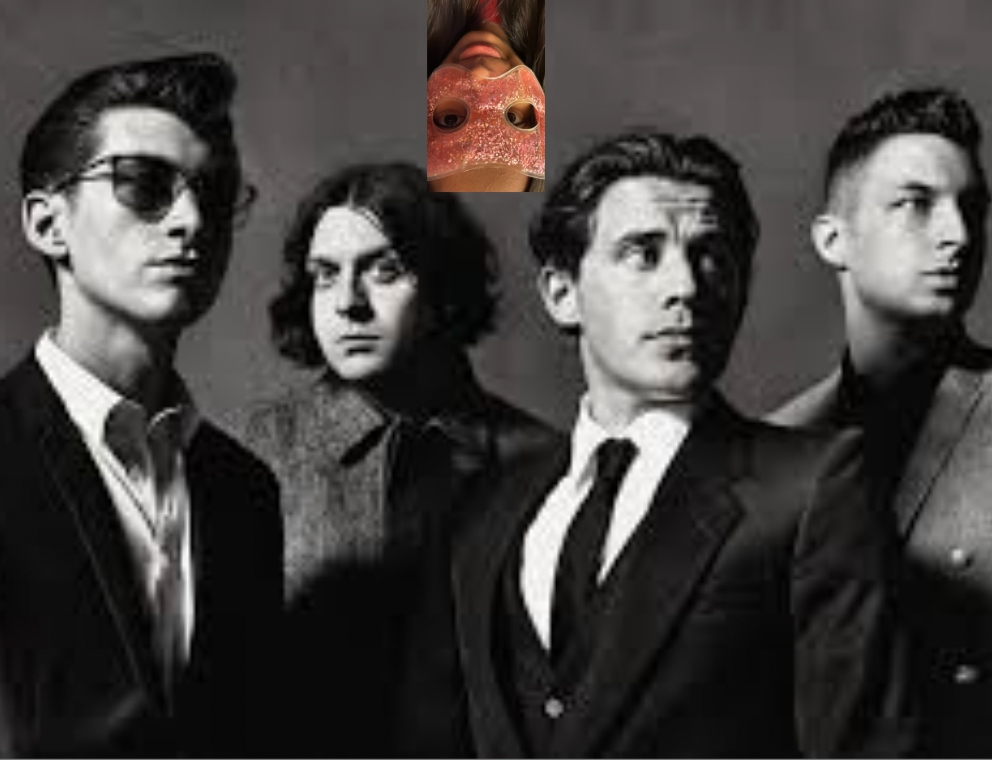

R U MINE?
Welcome to your personal Arctic Monkeys website! You could've picked any website and I would've made it awesome, but I do hope you think this is pretty good. Love you babe, go play around!
Click the windows to play the songs!

R U Mine?
Arctic Monkeys
TRIBUTE PLAYLIST
13 Songs • Playable PreviewsTHE STORY OF THE MONKEYS
From Sheffield garage jams to worldwide stadium domination.
The Birth of a Beast
Sheffield Beginnings
Alex Turner, Jamie Cook, Matt Helders, and Andy Nicholson form the band in High Green, Sheffield. They start practicing in a garage, playing raw instrumental covers of bands like Led Zeppelin and The Vines before Turner takes up lead vocals.
Alex & Jamie's Guitars
Both received guitars for Christmas in 2001, triggering their songwriting sessions.
First Live Gig
Played at The Grapes pub in Sheffield on June 13, 2003, earning £27 from ticket sales.
The Myspace Revolution
Beneath the Boardwalk
Handing out free demo CDs at gigs leads fans to upload tracks onto Myspace. The band reaches viral internet stardom organically without record label backing, launching them straight into the national spotlight.
Demo CD Distribution
Burned demo CDs were handed out for free at early shows, which fans then uploaded to the internet.
Domino Records
Signed with the independent label Domino Records in June 2005 after refusing major label offers to maintain creative control.
A Historical Debut
Whatever People Say I Am...
Released in January 2006, their debut album becomes the fastest-selling debut in British music history. Turner's sharp, observational lyrics about Sheffield nightlife capture the youth culture of a generation.
Dancefloor #1
'I Bet You Look Good on the Dancefloor' went straight to #1 on the UK Singles Chart.
Fastest Seller
Sold over 360,000 copies in its first week, becoming the fastest-selling debut album in UK history.
The Neon Masterpiece
Favourite Worst Nightmare
Nick O'Malley cements his role as bassist. The band releases their second album, featuring a faster, heavier, and darker sound. Recorded with a raw, energetic punch, it features tracks like Brianstorm, Fluorescent Adolescent, and 505.
Nick O'Malley Joins
Joined on bass as a temporary replacement for Andy Nicholson but quickly became permanent.
Awards Sweep
The album won Best British Album and Best British Group at the 2008 Brit Awards.
Desert Rock Shift
Humbug & Josh Homme
The band travels to the Mojave Desert to record with Queens of the Stone Age frontman Josh Homme. The result is Humbug, introducing heavy stoner-rock elements, darker arrangements, and Turner's growing lyrical maturity.
Desert Sessions
Recorded in Joshua Tree, California, homing in on heavy, atmospheric stoner-rock sounds.
Crying Lightning
The lead single highlighted the band's new organ-heavy, dark, psychedelic rock sound.
Global Superstardom
AM & "R U Mine?"
Fusing hip-hop beats, heavy rock riffs, and sleek R&B backups, AM catapults the Arctic Monkeys into global arenas. Turner's greaser aesthetic and tracks like Do I Wanna Know? and R U Mine? define the indie rock sound of the 2010s.
Riff Direction
Originally released as a stand-alone single in 2012, its success shaped the entire AM direction.
US Platinum
The album reached Platinum in the US, cementing their global stadium headliner status.
Cinematic Elegance
Tranquility Base & The Car
Pivoting away from guitar-driven rock, they release the lounge-pop piano record Tranquility Base Hotel & Casino followed by the orchestral, cinematic masterpiece The Car in 2022, proving their relentless artistic evolution.
The Steinway Piano
Turner wrote the entire Tranquility album on a Steinway Vertegrand piano in his LA home.
Monastery Sessions
The Car showcases a vintage, 1970s cinematic style recorded at a remote monastery in Suffolk.

Anahita & Arctic Monkeys
June 8, 2026
FOR ANAHITA 🖤
Happy Birthday! You could've picked anything in the world to have for your birthday and you picked an Arctic Monkeys tribute site! Twas certainly a choice, but I hope you like it nonetheless. I added a confetti button because confetti is nearly as awesome as you. Seriously happy birthday babe, also you lost the game, love youuuuuu.
Happy Birthday!
THE INSPIRED WEB
Explore the galaxy of incredible artists inspired by the Arctic Monkeys.